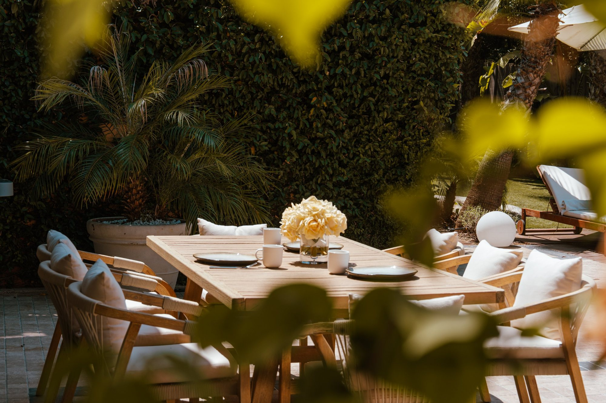
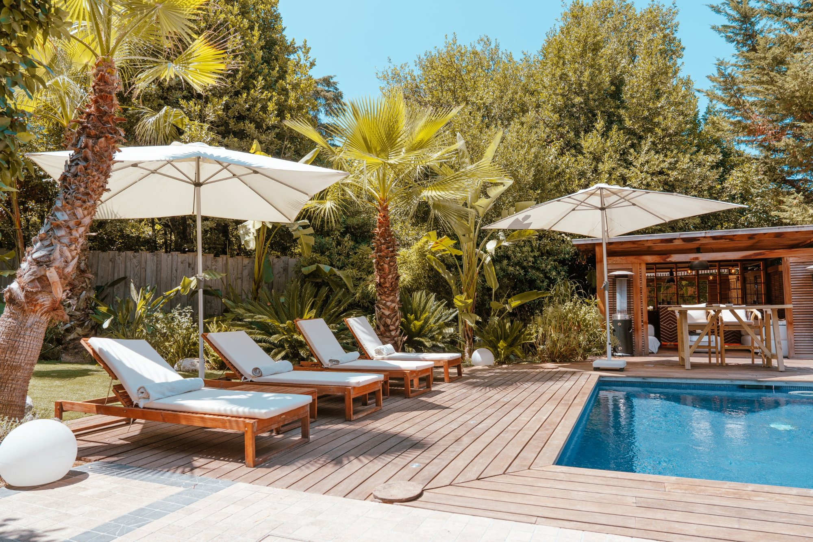
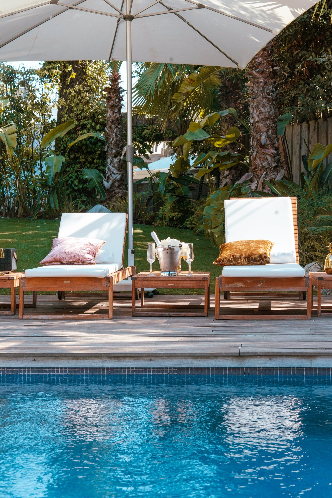
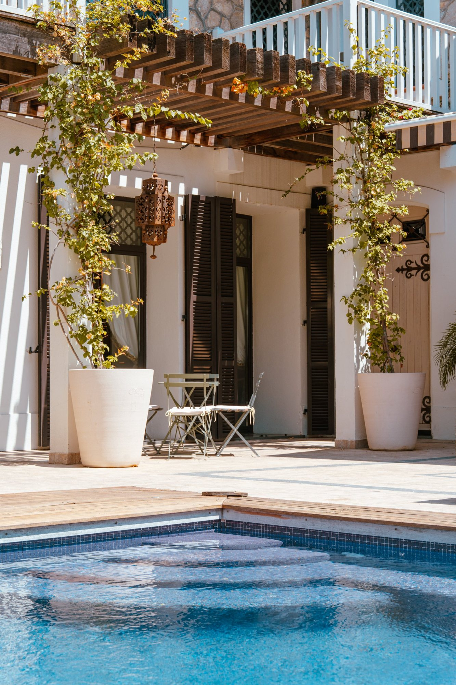
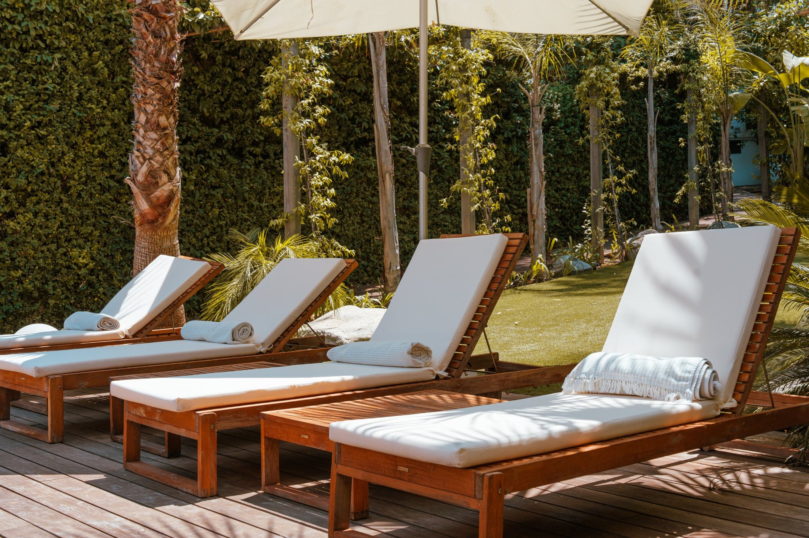
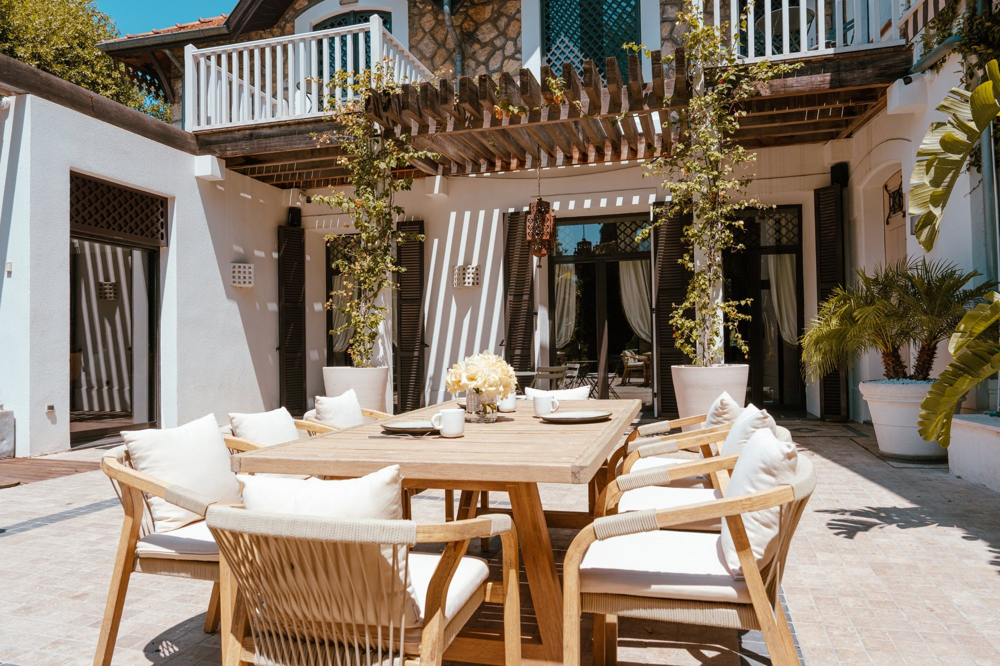
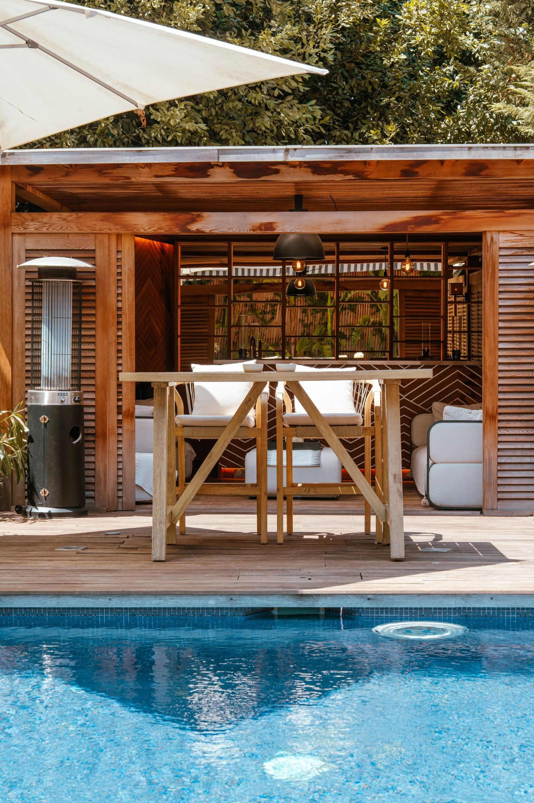
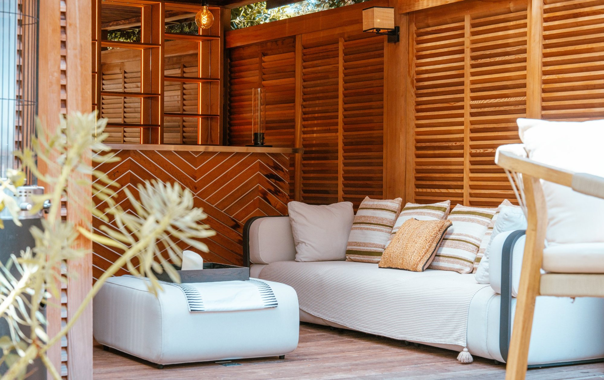
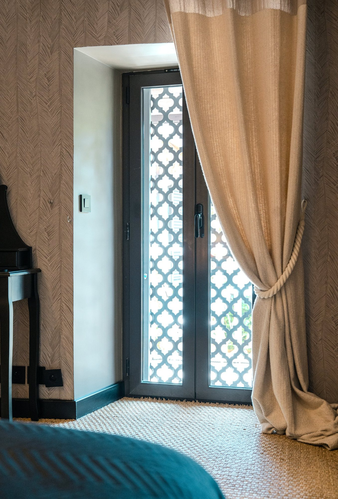
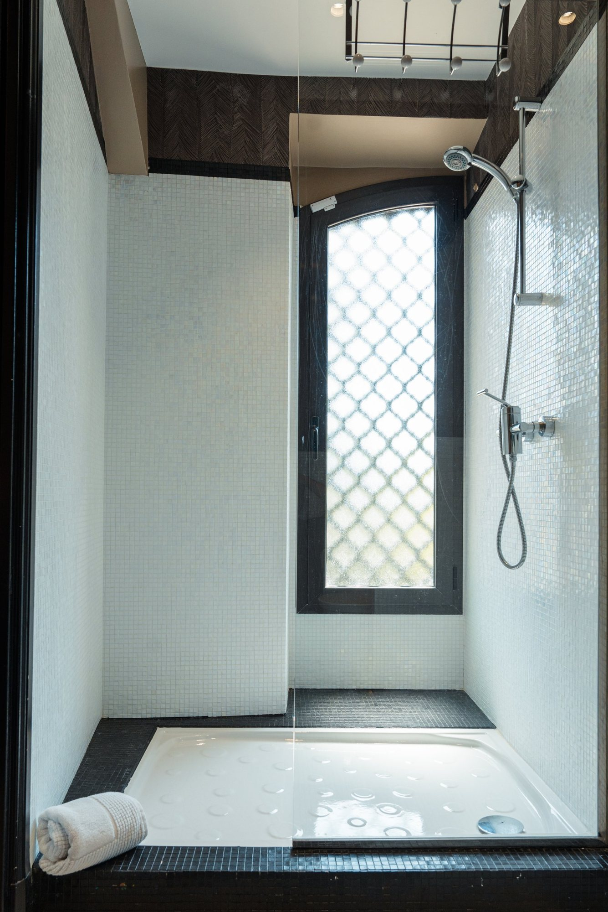

Espaces Photographe | Strasbourg, Alsace Photographe d’intérieur et d’espaces extérieurs, d’hôtel et d’immobilier à Strasbourg et en Alsace
Des lieux
qui donnent envie : photographe d’intérieur et d’hôtel à Strasbourg
Avant de pousser une porte, on a déjà rêvé du lieu : de sa lumière, de ses matières, de son silence. Mon métier, c’est de donner cette envie en une image.
Intérieurs comme extérieurs, hôtels, restaurants, architectes, agences immobilières : je photographie les espaces pour qu’ils se vendent, se louent ou se réservent. Depuis un an, je travaille avec l’agence Manda, pour qui je photographie maisons et appartements destinés à la vente et à la location.
Je travaille presque exclusivement en lumière naturelle : les chambres, les salles d’eau, les espaces communs, les terrasses, les jardins et les piscines, et les détails en gros plan, un luminaire, une poignée, une matière. Et je maîtrise le process à la perfection : un shooting rapide, une livraison rapide.
Un lieu,
deux heures : photographe d’intérieur pour hôtels, restaurants et agences en Alsace
01
Sur place
Je viens, j’observe la lumière du lieu et je photographie les pièces, les espaces communs, les détails. Environ deux heures suffisent en général.
02
De 10 à 50 photos
Le nombre de photos dépend de la taille du lieu et de votre budget : de 10 à 50 images, retouchées, en haute définition, avec les droits d’utilisation.
03
Livrées en 5 jours
Vos photos vous parviennent en général sous 5 jours ouvrés, prêtes pour vos annonces, votre site et vos réseaux.
Je travaille sur devis, partout en Alsace, sans frais de déplacement.
Photos d’espaces à Strasbourg et en Alsace












Questions fréquentes : photographe d’intérieur à Strasbourg
Pour qui travaillez-vous ?
Pour des hôtels, des restaurants, des architectes et des agences immobilières. Depuis un an, je travaille avec l’agence Manda, pour qui je réalise les photos destinées à la vente et à la location de maisons et d’appartements.
Que photographiez-vous ?
Les intérieurs et les extérieurs : chambres, espaces communs, terrasses, jardins, piscines, et les détails en gros plan sur un luminaire, du mobilier, une matière. Je travaille essentiellement en lumière naturelle.
Combien de temps dure un shooting, et combien de photos vais-je recevoir ?
Comptez environ deux heures sur place. Vous recevez entre 10 et 50 photos, selon la taille du lieu et votre budget.
Sous quel délai les photos sont-elles livrées ?
En général sous 5 jours ouvrés. Elles sont retouchées, en haute définition, avec les droits d’utilisation.
Pourquoi vous choisir ?
Parce que je connais parfaitement le process : je m’organise vite, je shoote vite, et je livre vite, sans rien sacrifier à la qualité.
Combien coûte une prestation et comment réserver ?
Je travaille sur devis, en fonction de votre projet. Une fois le devis signé, un acompte de 30 % confirme la réservation. Écrivez-moi sans attendre, il n’y a pas de délai minimum.
Intervenez-vous dans toute l’Alsace ?
Oui, j’interviens dans toute l’Alsace sans frais de déplacement. En dehors de l’Alsace, des frais de déplacement viennent s’ajouter.
Parlons de votre lieu : devis photographe d’intérieur à Strasbourg
Dites-moi quel lieu vous souhaitez mettre en valeur et pour quel usage. Je vous réponds rapidement, avec un devis adapté.